Lumir UI 定稿检查（只有这 12 张）
检查范围：方向 C 骨架（无 agent 的三栏布局）+ 无衬线表皮，浅色 / 深色 / eink 三主题。1-3 主界面，4-6 内容类型，7-9 浮层，10-12 callout 语义收敛（v1.2）。
不用看的：方向 A / B、屏 2-3（agent 假设）、serif 变体、composer 变体——均已否决或推迟，在别的目录，与本页无关。
检查重点：屏 1 看文件树密度、标签页、正文排版、状态栏；屏 4 看表格、代码块高亮、frontmatter 属性区；三主题看浅色/深色柔和、eink 高对比的分档是否符合预期。
意见按「必须改 / 可以忍 / 挺喜欢」三档反馈。
主界面（日常 90% 时间的画面）
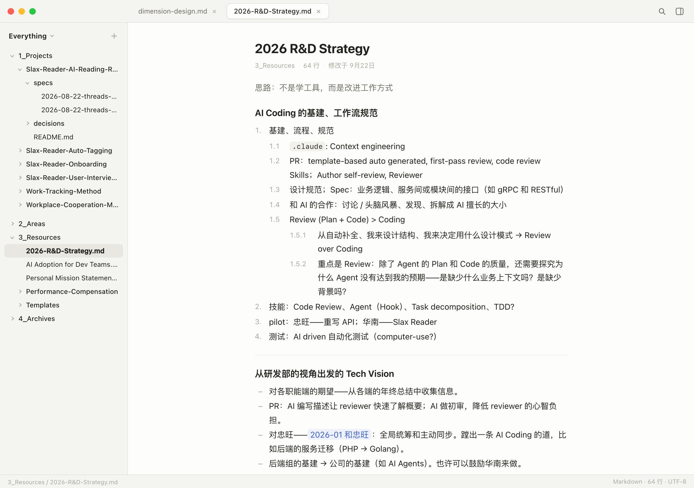
1 · 主界面 · 浅色 交互版
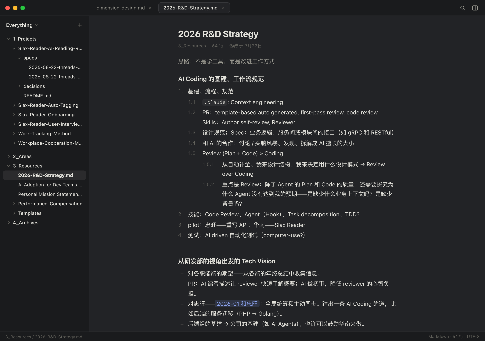
2 · 主界面 · 深色 交互版
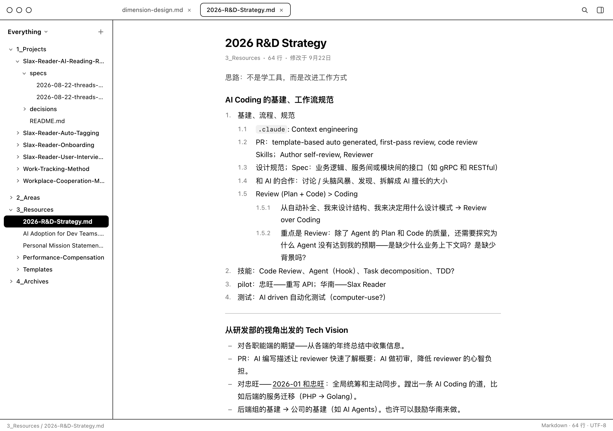
3 · 主界面 · eink 交互版
内容类型（表格 / 代码块 / frontmatter / 标题 / 列表 / wikilink / 引用）
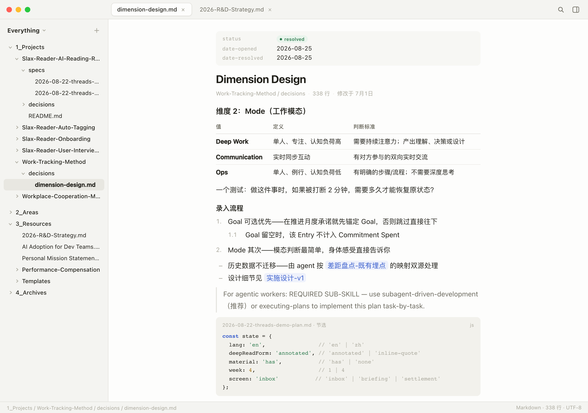
4 · 内容类型 · 浅色 交互版
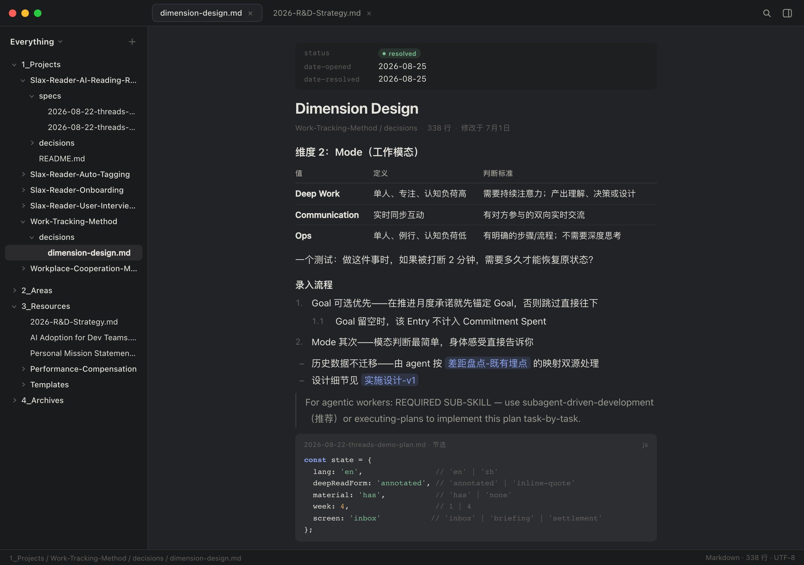
5 · 内容类型 · 深色 交互版
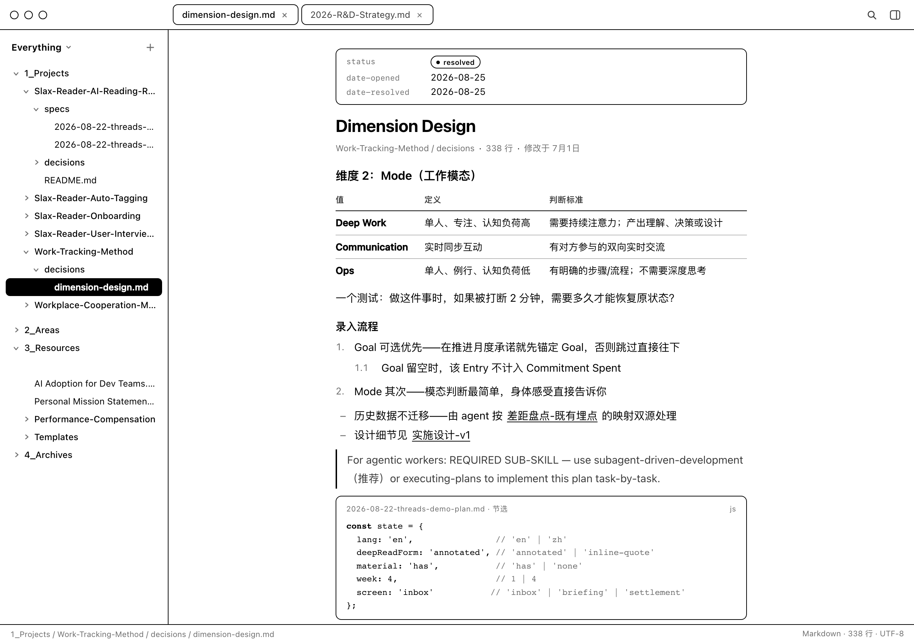
6 · 内容类型 · eink 交互版
浮层（v1.1 增补：vault 切换 / Outline / toast / 遮罩 + 大浮层）
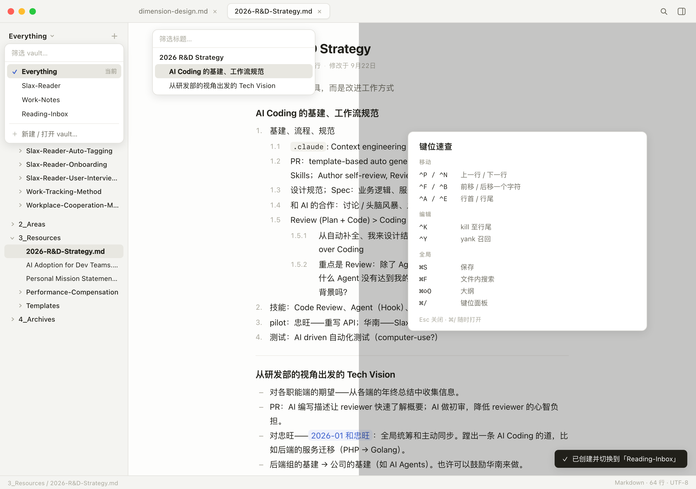
7 · 浮层 · 浅色 交互版
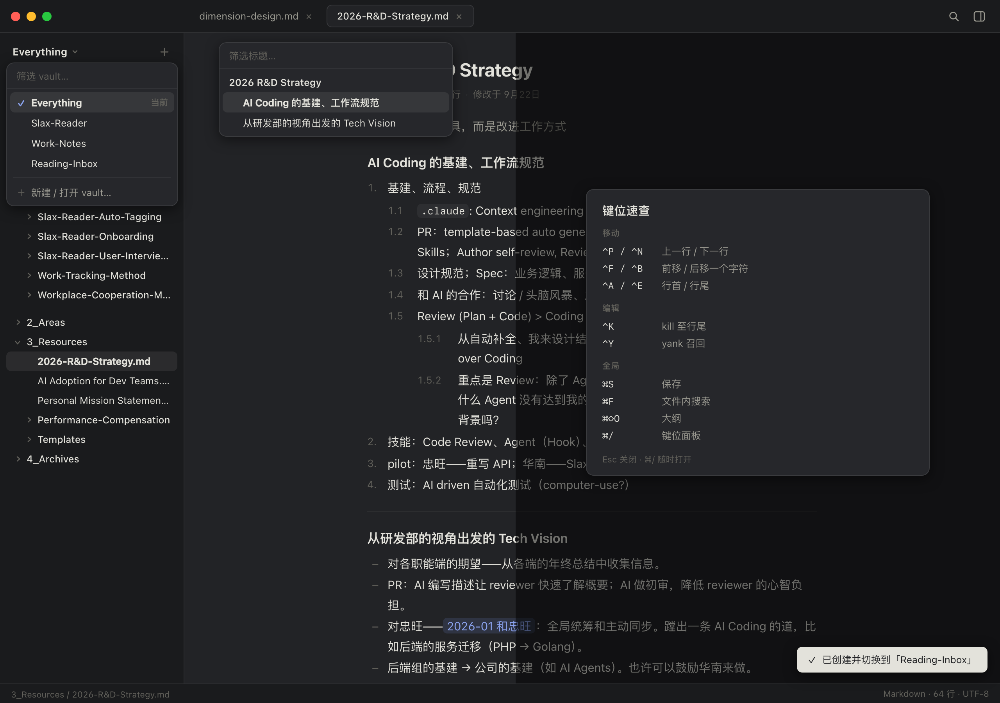
8 · 浮层 · 深色 交互版
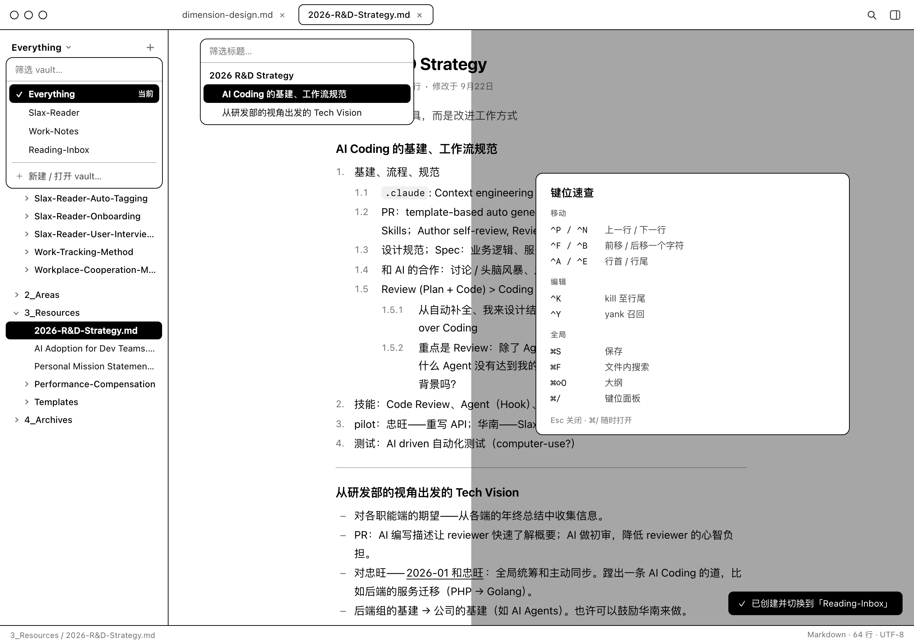
9 · 浮层 · eink 交互版
Callout 语义收敛（v1.2：13 类 → 五族语义色，同族靠标题文字区分）
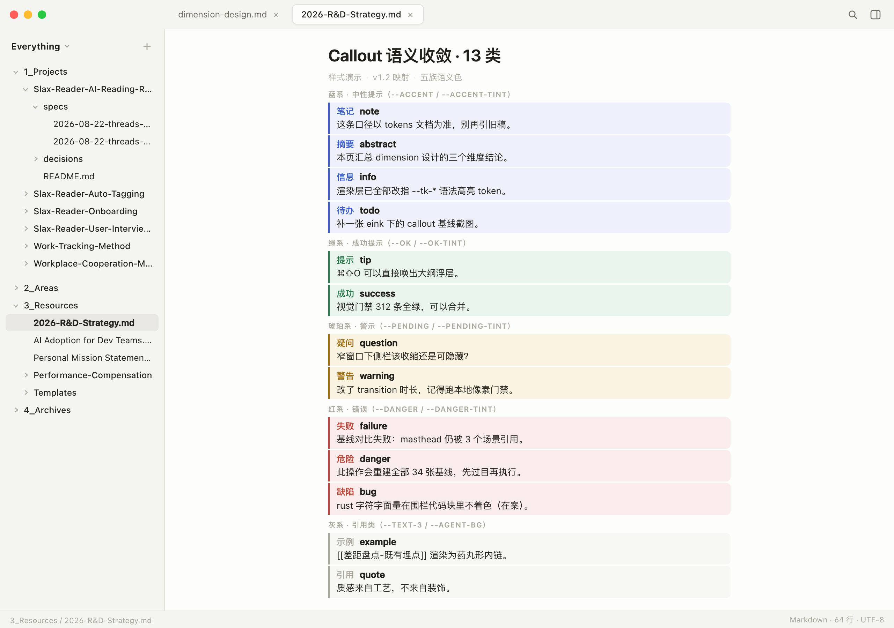
10 · callout · 浅色 交互版
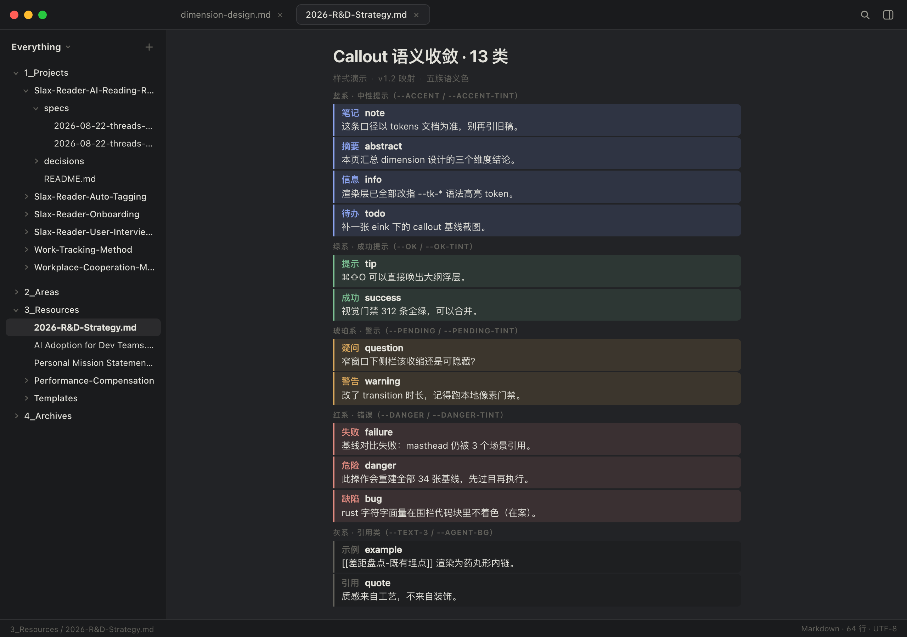
11 · callout · 深色 交互版
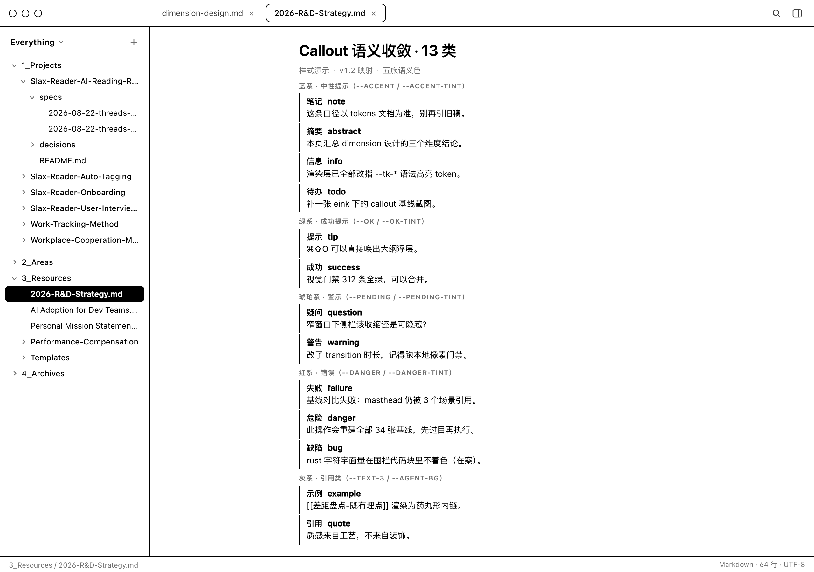
12 · callout · eink 交互版